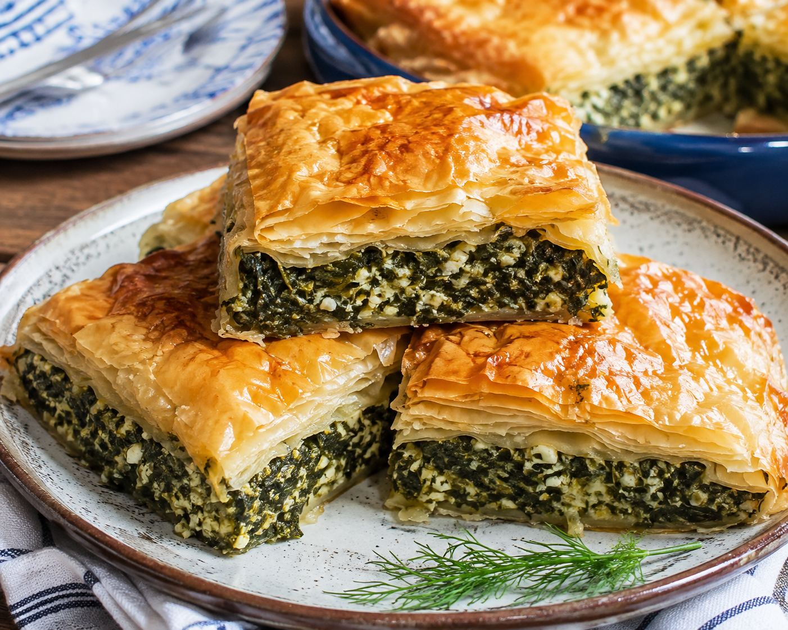

Home
Spanakopita

Description
Spanakopita is a traditional Greek savory pie made with crispy, flaky phyllo
pastry layers and a rich filling of chopped spinach, salty feta cheese, onions
or scallions, fresh herbs like dill and parsley, and bound with eggs
Ingredients
- 1kg baby spinach
- 50g fresh mint, chopped
- 10 spring onions, chopped
- 100g dill or fennel, chopped
- 600g smooth feta
- 2 rounds hard feta
- 4 eggs
- 1 packet puff pastry
- 60g unsalted butter
Steps
- Boil the baby spinach in a pot until well-cooked. Remove and strain.
- Melt the unsalted butter in a pot and fry the spring onion.
- Add the mint and dill to the pot and sauté. Remove from heat, add the spinach and mix well.
- Place all contents in a mixing dish.
- Add smooth feta cheese and crumble the hard feta cheese.
- Add the eggs and mix into the spinach mixture.
- Butter the puff pastry and place on a sheet covering the bottom of the oven-proof dish. Perforate the pastry with a fork.
- Pour the mixture onto the puff pastry, levveling it evenly.
- Cover with another layer of buttered puff pastry and cook at 180°C for approximately 2 hours.